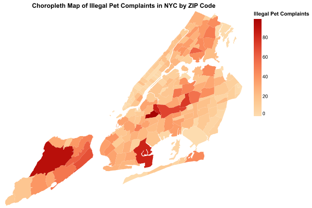

Final Project Writeup (Group 14)
- Group Members
- Yuxuan Geng, PPHA 30538 4, GitHub: emmaa1123
- Kohan Chen, PPHA 30538 4, GitHub: kohaningithub
- George Wang, PPHA 30538 4, GitHub: gwang613uchi
Introduction
Illegal pet ownership in New York City (NYC) is a complex issue influenced by various socioeconomic factors, such as education level. This project explores the relationship between educational attainment and the prevalence of illegal pet ownership across NYC boroughs (Manhattan, Brooklyn, Queens, The Bronx, and Staten Island). By combining data on education levels and illegal pet incidents, we aim to uncover potential patterns and provide insights into potential policy responses.
Data Sources and Preparation
Illegal Pets Data: We used complaint records from NYC Open Data, focusing on incidents involving illegal animals kept as pets. They have multiple variables regarding each incident entry, such as address, ZIP code, animal type, agency name, status of incident, etc. The data was cleaned to remove irrelevant columns and standardized for borough-level analysis. Education Attainment Data: Educational attainment data was collected from U.S. Census Bureau. Variables such as populations with less than 9th-grade education, high school graduates, and bachelor’s degrees were selected normalized to accommodate different measurements/definitions across years. For example, from 2010 to 2014, the Census Bureau used percentages to measure people with different levels of education attainment. However, since 2014, the measurement has been changed to the number of people. This inconsistancy will be resolved later in the data cleaning and standardization process.
Data Cleaning and Standardization
Key preprocessing steps included:
- Combining Education Data: Merging annual education datasets (2010–2022) trhough for loop and reconciling variable definitions for consistency by manually checking each year definition by selecting top 13 rows of the merged dataframe.
- Standardizing Names and Education Attainment: Mapping borough and county names for alignment across datasets. Transforming all education attainment (population above 25 years old) measurements into numbers of populatin, instead of percentages, by multiplying the population over 25 and the percentage of each year.
- Time Variable Adjustment: Ensuring time variables matched between datasets for effective merging by transforming illegal pets data time variable to year format because we need to combine it with education data that only has time variable in time.
- Normalizing Inccident Counts Per 10,000 People: This method normalizes incident counts by population size, allowing fair comparisons across boroughs. For example, Staten Island that has relatively low population may have lower illegal pets iccidents, while Brooklyn with high population may have more inccidents. This nature makes it unfair to compared the ccident count directly. Thus, we also normalize incident counts per 10,000 people in each borough. By normalizing incident counts per 10,000 people, the method ensures fair comparisons across boroughs with different population sizes.
Visualization and Regression Models
We used altair package to build visualizations to make these relationships accessible, helping to identify patterns and inform decision-making. The eventual merged dataset, named “final_education_illegal_pets.csv”, provided borough-level insights into illegal pet incidents and corresponding education attainment levels. We also built regression analysis that quantifies the relationship between education levels and incident rates to provide insights into potential trends.
Bar Chart: Types of Illegal Pets in NYC
A bar chart visualizes the frequency of illegal pet types, revealing that roosters dominate the list of incidents.
Pie Chart: Borough-Wise Distribution
The pie chart highlights the geographic distribution of incidents, with Brooklyn and Queens leading in complaint counts, reflecting their population density.
Bar Chart: Education Levels by District
The bar chart displays the average population in NYC boroughs by education level, with less than a 9th-grade education, high school graduates, and those holding a bachelor’s degree or higher. Manhatton has the hight number of bachelor degree holder, while Staten Island has the lowest number.
Line Plot: Education Levels Over Time
The line plot illustrates trends in educational attainment (e.g., high school graduates, bachelor’s degrees) over the study period, providing context for borough-level analysis. Bachelor degree holders have increased in the past decade, while high schoool graduates and people with less than 9th grade have experienced fulctuations.
Choropleth Map: Spatial Patterns
The choropleth map presents ZIP-level variability in complaints, showing dense clusters in specific urban areas, with darker color indicating higher complaint densities. This visualization emphasizes localized trends in illegal pet incident.

Regression Models
Regression analysis helps identify relationships between education levels as percentages and incident rates. Among each level of education attainment, we performed Ordinary Least Squares regression, using all education levels (as percentages) as predictors. Different cities were labeled in the graph as well to represent their unqiue education level and illegal pet incident rate. The overall model was represented by the red line in each graph to show a general trend between each education level in percentage and illegal pet incident.
Shiny App
We built shiny-based application to provide insights into illegal pet incidents in New York City by offering three key visualizations: a choropleth map highlighting incident density across ZIP codes, a line chart of education levels over time, and a correlation plot examining the relationship between education attainment and incident rates. Through switching toggle and checkbox, users can interactively filter data by selecting specific years, year ranges, or education levels, allowing users to observe the spatial and socioeconomic factors influencing illegal pet incidents.
NLP Analysis
We applied sentiment analysis to understand the emotional tone in resolution descriptions of illegal pet complaints. Using TextBlob, we scored text from -1 (negative) to +1 (positive), with 0 being neutral, to understand how different outcomes are communicated. Key findings include “Warning Issued” as most common resolution, and “Access Denied” as the most negative tone. Overall trend is slightly negative to neutral tone across most categories. The analysis reveals that while most communications maintain a professional, slightly negative tone, failed inspection attempts (“Access Denied”) are communicated more negatively. This suggests a consistent official communication style with variations based on resolution outcome.
Also, for the Resolution distribution analysis, text descriptions are converted to numerical vectors using TF-IDF, then matched to categories using cosine similarity, enabling automated and consistent classification of resolution types. It shows a preference for issuing warnings (34%) over finding violations, though a concerning 21% lack recorded resolutions. Access to inspection sites remains a notable challenge.
Key Findings
- Minimal Influence of Education: Regression analysis revealed weak correlations between education attainment in percentageand illegal pet ownership.
- Borough Variability: Staten Island exhibited higher-than-predicted incident rates, indicating the need for targeted policy interventions.
- Spatial Clusters: ZIP-level analysis highlighted areas with disproportionately high complaint frequencies.
Results indicated that education levels in percentage had minor influences, with coefficients for all variables being statistically small. It reflects the rare nature of illegal pet ownership (0.2% to 1.0% of population). Less than 9th-grade education percentage shows a negative coefficient (-0.0466), high school graduation shows a slight negative relationship (-0.0335), and bachelor’s degree shows a negative relationship (-0.0400).
The graphs appear to show strong negative relationships primarily due to scaling effects. While the x-axis spans a large range (showing education levels in percentage), the y-axis variation is minimal (0.2% to 1.0% incident rate). This disparity in scales makes even small changes appear more dramatic visually. For instance, the positive coefficient for high school graduation (3.576e-06) appears negative in the graph because the effect is so small relative to the axis scales. These patterns, while statistically subtle, suggest that education levels percentage have a minor influence on illegal pet ownership in NYC, though other factors likely play important roles in these relationships.
Limitations
Our analysis faces several key methodological and data constraints. The use of borough-level aggregation masks potential neighborhood-level variations in our final combined dataset, potentially obscuring important local patterns and relationships. This limitation stems from the education data being available only at the borough level, without more detailed location information like zip codes, which restricts our regression analysis’s statistical power and makes it difficult to establish robust relationships between variables.
Our regression model, while focusing on educational attainment, doesn’t account for other potentially important factors such as income levels, housing types and regulations, cultural factors, local enforcement patterns, and pet-related infrastructure (e.g., veterinary services, pet stores).
Furthermore, this study focuses on population above 25 years old (due to the missing data from previous years) which may not be representative enough to demonstrate the relationship between illegal pet ownership and educational attainment among all age groups.
Policy Implications
- Community Outreach: Educational campaigns targeting high-incident areas, highlighted in the choroplether path.
- Enhanced Enforcement: Strengthening monitoring and reporting mechanisms in areas with dense complaint clusters.
- Broader Socioeconomic Analysis: Exploring additional factors such as income levels, housing conditions, and cultural influences.
Despite its limitations, this method offers a useful framework for understanding the relationship between educational attainment percentage and illegal pet incidents in NYC. By normalizing data and employing regression analysis, the study provides insights that can inform policy decisions and highlight areas for further research. The visualizations effectively communicate complex data, making it accessible to a wider audience and supporting informed decision-making.
Future Directions
Future research can enhance this study by focusing on more detailed, neighborhood-level data to examine localized trends and variations in illegal pet ownership/incidents. Expanding the analysis scope to more socioeconomic factors, such as household income, housing conditions, and cultural influences, cam provide a comrephensive understanding of the issue. Additionally, the development of interactive tools that engage the public and assist policymakers in visualizing data cab support more effective targeted interventions. In addition, future research can pay more attention to the enforcement side to see whether incident were handle properly that can prevent future illegal incidents.